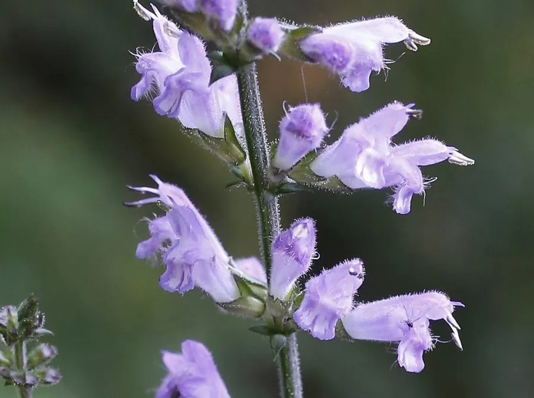

花卉与草本 · 植物界
鼠尾草 Salvia japonica

唇形科多年生草本，蓝紫色花序细长如鼠尾，是秋季花境的常用材料，中国、日本山地常见，也可入药。
- 分类
- 门被子植物门纲木兰纲目唇形目科唇形科属鼠尾草属
- 栖息环境
- 中国和日本的山坡草地、林缘与路旁，喜光、喜湿润
- 地理分布
- 原产中国与日本，中国长江流域及以南地区常见
- 保护级别
- 暂无评估
物种志
鼠尾草为唇形科鼠尾草属多年生草本，株高 40–80 厘米，茎四棱形，多分枝，全株被短柔毛。叶片对生，卵形至披针形，边缘有锯齿。轮伞花序排列成顶生的总状花序，花序细长、略弯曲，形似鼠尾，花冠唇形，蓝紫色或淡紫色，花期 6–9 月；果实为小坚果。
鼠尾草原产中国和日本，生于山坡草地、林缘和路旁，喜阳光充足、温暖湿润和排水良好的环境。它与欧洲烹饪常用的鼠尾草同属不同种，后者叶片厚、灰绿色、气味浓烈，而本种以观赏为主，花序蓝紫、细长飘逸，适合布置花境和庭院石边。鼠尾草全草可入药，有清热利湿之效；栽培以播种和扦插为主，花后修剪可促进二次开花。
形态与习性
- 株高40–80 厘米，茎四棱形
- 花期6–9 月，花序细长如鼠尾
- 果期花后结小坚果
- 光照喜充足阳光，也耐半阴
- 水分喜湿润，忌积水
- 土壤疏松肥沃、排水良好的壤土
- 繁殖播种、扦插
- 主要用途花境观赏、庭院点缀、全草入药
趣味知识
- 鼠尾草的花序细长、略弯曲，形似老鼠尾巴，因此得名。
- 它与欧洲烹饪用的鼠尾草同属不同种，后者叶片厚、气味浓烈。
- 本种主要作观赏，蓝紫色花序轻盈飘逸，适合花境种植。
- 全草可入药，有清热利湿之效，但须遵医嘱使用。